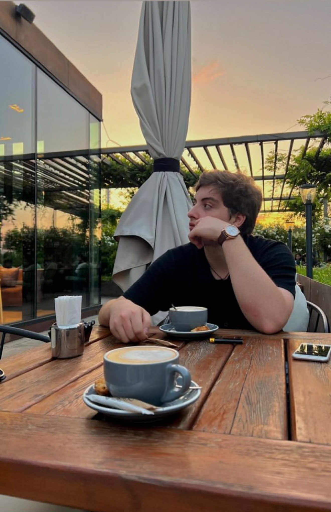

I’m a Computing and Security Technology student at Drexel University with deep interests in cybersecurity, digital forensics, and financial technology.
I love solving real-world security challenges, from malware analysis to building automated protection tools. When I’m not working with systems, I enjoy exploring Georgian culture, traveling, and competing in Capture the Flag events.